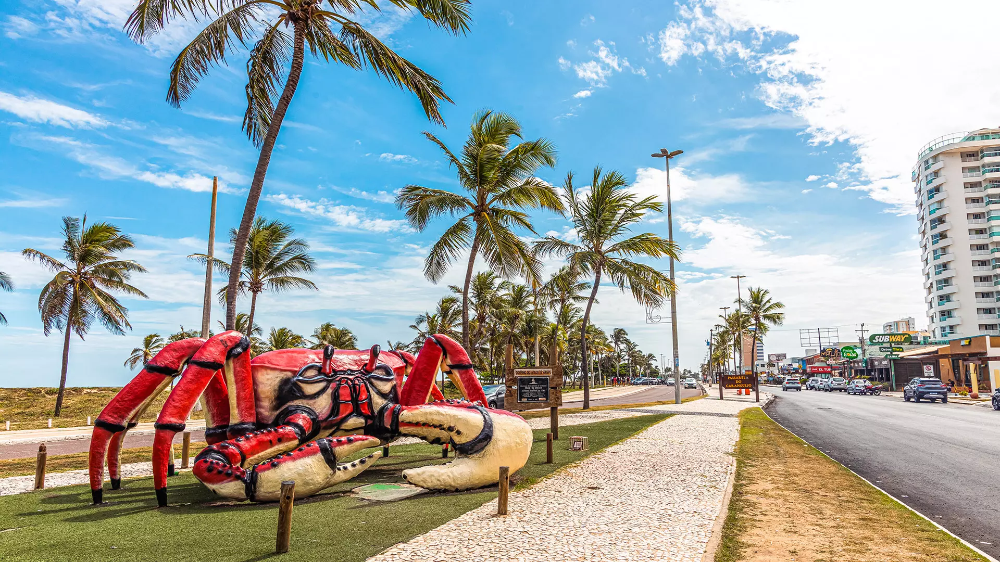

 A localização da Passarela do Caranguejo, em Aracaju, é inconfundível. É só seguir reto pela orla da praia até dar de cara com o Caranguejaço, uma escultura de 2m30 de altura e 7m de largura criada pelo artista sergipano Ary Marques Tavares em fibra de vidro. Por ali já estão os primeiros restaurantes do corredor gastro-boteconômico mais importante da cidade.
Apesar do nome, nem só de caranguejo são feitos os cardápios dos estabelecimentos. Há receitas com carne-de-sol, pirão, vários outros peixes e petiscos como pasteizinhos de caranguejo, para quem não quer se aventurar na chamada arte de manipular o martelinho na tábua de mármore ou madeira para quebrar a casca da iguaria. Em comum entre as opções está a deliciosa vista do mar e o nem tão agradável som alto.
Uma das casas mais famosas é o Cariri (Av. Santos Dumont, s/n. tel. 79/3243-1379; aberto diariamente) que, além da simpática área interna, oferece também todas as noites (e nas tardes de sexta, sábado e domingo) música típica, com salão para quem quiser arriscar passos de forró. Comi um salmão com salada, achei a quantidade satisfatória e o preço condizente com o que pagaria em São Paulo (com um suco, paguei por volta de R$ 65, mas existiam outras opções de pratos mais em conta).
O Amanda (Avenida Santos Dumont, 527, tel. 79/3243-2029; aberto diariamente) também me foi bem recomendado, com especial menção ao caldinho de sururu. O Rei da Sopa (Avenida Santos Dumont, 541, tel. 79/3247-3399) também tem pratos do gênero, como o creme de macaxeira e charque. Frutos do mar obviamente também são a especialidade do Casquinha de Caranguejo (Av. Santos Dumont, 751, tel. 79/3243-7011; aberto diariamente) e do cultuado Pitú com Pirão da Eliane (Av. Santos Dumont, 957, tel. 79/3445-5020; aberto diariamente).
Com crianças ou pessoas alérgicas a frutos do mar no grupo? Não se desespere. Boa parte dos restaurantes oferece um cardápio mais “comum” também, com frango, carne, e as sempre salvadoras da humanidade batatas fritas. Há, inclusive, nos maiores estabelecimentos, uma pequena área de lazer para os pequenos. Do lado da praia, na calçada, também há uma série de outras opções, de tapioca a churrascarias, passando até por comida asiática e um Subway. Foge da proposta da Passarela do Caranguejo? Foge, não vou mentir. Mas até aí você já vai ter uma linda foto com o bicho.
Ainda que o local seja especial, principalmente à noite, quando fica realmente movimentado, não é só ali que se pode comer o prato típico de Sergipe. Diversos bares e restaurantes da cidade e inclusive na praia, também têm criações com caranguejo.